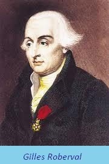
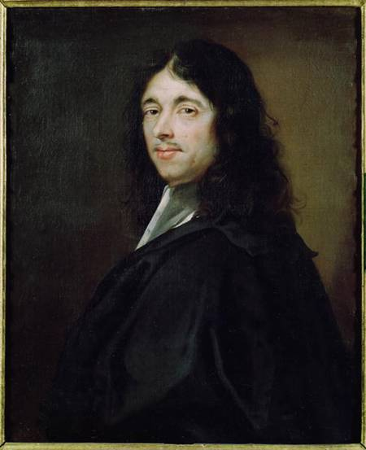

Manual do programa
Abaixo irão ser mostrados alguns exemplos de funções suportadas pelo programa e qual a formatação a utilizar.
O formato utilizado será |Representação matematica| --> |Representações validas no programa|
Constantes
e --> E
π --> pi
Polinomial
x⁵ --> x⁵ ou x**5 ou x^5
x^(1-x) --> x^(1/x) ou x**(1/x)
x^(e) --> x^E ou x**E ou x^(E)
√x --> √(x) ou sqrt(x)
√(x+3) --> √(x+3) ou sqrt(x+3)
√3(x) --> root(x, 3)
Logaritmica
log(x) --> log(x)
ln(x) --> ln(x)
ln(x-e) --> ln(x-E)
log(x-1) --> log(x-1)
log3(5) --> log(3, 5)
log17(x-5) --> log(17, x-5)
Trigonometria
sen(x) --> sen(x) ou sin(x)
cos(x) --> cos(x)
tan(x) --> tg(x) ou tan(x) ou tang(x)
cotg(x) --> cotg(x) ou cot(x)
sen(x-2) --> sen(x-2) ou sin(x-2)
sen(x²) --> sen(x²) ou sin(x**2) ou sin(x^2)
sen(√x) --> sen(√x) ou sin(√x) ou sen(sqrt(x)) ou sin(sqrt(x))
Alguns exemplos mais complexos
x^(sin(x) - 1-x²) --> x**(sin(x)-1/x**2) ou x^(sin(x)-1/x^2) ou x^(sin(x)-1/x²)
log(x⁵-2^(tg(-x-1)))+ln(x⁴-5)-2x³+5x²-sen(x)+√2 --> log(x⁵-2^(tg(-x-1)))+ln(x⁴-5)-2*x³+5*x²-sen(x)+√(2) ou
log(x**5-2**(tg(-x-1)))+ln(x**4-5)-2*x**3+5*x**2-sen(x)+sqrt(2) ou
log(x**5-2**(tg(-x-1)))+ln(x**4-5)-2*x**3+5*x**2-sen(x)+√(2)
Algumas definições
Derivada
Definição: Limite para o qual tende a razão entre o incremento da função e o incremento da variavel quando o ultimo tende para zero.
-Fonte: Grande Enciclopedia Universal Vol. 7
Integrais
Indefinidas (Primitivas)
Integral indefinida, primitiva ou derivada inversa, define-se como função primitiva de f(x) uma função F(x), tal que a sua derivada seja dF(x)/d(x) = f(x) no ramo da matematica do Calculo Diferencial
Definidas
Integral que se calcula atraves das regras de Barrow, dos quais se chamam de integrais imediatos aqueles que se podem deduzir atraves das regras da derivação.
História do Calculo Diferencial
No século XVII
Introdução
O problema de encontrar a tangente de uma curva foi estudado por vários matematicos desde os primeiros estudos efectuados por Arquimedes na Antiguidade. A primeira tentativa de determinar a tangente de uma curva que se assemelhava ao metodo moderno de Calculo veio de Gilles Persone de Roberval no periodo de 1630 a 1640. Por volta da mesma epoca em que Roberval estava a desenvolver o seu metodo, Pierre de Fermat usou a noção de máxima e a infinitesimal para encontrar a tangente para a curva. Alguns historiadores creditam Fermat com a descoberta da derivada, mas não foi ate Leibniz e Newton terem rigorosamente definido o seu metodo de tangentes que uma tecnica generalizada tornou-se grandemente aceite.
Metodo de Roberval de linhas tangentes usando movimento instantâneo
A ideia principal do metodo de Roberval de determinar a tangente de uma curva era a noção de movimento instantâneo. Ou seja, considerando-se o desenho da curva num ponto em movimento, se, em algum ponto da curva os vetores que efectuam o movimento da curva podem ser determinados, entao a tangente é simplesmente a combinação da soma destes vetores.
Este metodo foi aplicado por Roberval para encontrar as tangentes das curvas para as quaisl ele foi capaz de determinar os vetores contituentes do movimento num ponto. Para uma parabola, Roberval conseguiu determinar estes vetores, exemplificados abaixo na figura.

Depicção do grafico de uma parabola mostrando o movimento constituente dos vetores V1 e V2 num ponto P. Roberval determinou que num ponto P de um parabola, existem dois vetores que indicam o valor do seu movimento instantâneo. O vetor V1, que esta na mesma direção da linha juntando o foco da parabola no ponto S e o ponto P. O outro vetor indicando o movimento instantâneo (V2) é perpendicular ao eixo y, sendo este a directriz ou a reta perpendicular a linha da intesecção da parabola. A tangente do grafico no ponto P é simplesmente a soma dos vetores V = V1 + V2.
Utilizando esta metodologia, Roberval foi capaz de encontrar as tangentes de numerosas outras curvas incluindo elipses e cicloides, no entanto, encontrar os vetores descrevendo o movimento instantaneo num ponto mostrou-se dificil para um grande numero de curvas. Roberval nunca foi capaz de generalizar este metodo e por essa razão existe historicamente apenas como o precursos do metodo de encontrar tangentes com o auxilio de infinitesimais desenvolvido por Edwards mais tarde.
Maxima e Tangente de Fermat
O metodo de encontrar a tangente foi desenvolvido em 1630 por Pierre De Fermat e apesar de nunca ter sido rigorosamente formulado, este assemelha-se bastante aos metodos utilizados por Newton e Leibniz. Tendo em falta um conceito formal de limite, Fermat não foi capaz de justificar propriamente o seu trabalho, no entanto, ao examinar as suas metodologias, é aparente que este compreendia com grande dominio, o metodo usado para diferenciar nos dias de hoje.
De modo a entender o metodo de Fermat, é preciso em primeiro lugar compreender a tecnica utilizada por este de modo a encontrar a maxima. O primeiro problema documentado por Fermat em diferenciação envolve encontrar o maximo de uma equação, ficando aparente que foi graças a esta descoberta que este conseguiu depois desenvolver o seu metodo relativo a encontrar as tangentes.
O problema consistia em dividir um segmento de uma reta em dois segmentos de forma a que o produto dos dois novos segmentos fosse um maximo.

Uma reta de tamanho 'a' é dividida em dois segmentos, esses dois segmentos sao 'x' e (a-x). O objetivo seguinte era maximizar o produto x (a - x). Apesar da sua forma de resolver na altura ser relativamente misteriosa sem o conceito atual de limite, nos dias de hoje, tendo estes em mente, o seu metodo é relativamente simples de compreender. O que Fermat fez foi substituir cada valor de x com x + E e estipulou que quando a maxima fosse encontrada, x e x + E seriam iguais. Obtendo a equação:
x(a - x) = (x + E)(a - x - E)
Atraves da simplificação de ambos os membros da equação e cancelamento de termos, Fermat reduziu-a para:

Feito isto, atribui-se a E o valor de 0, ficando assim com:

Isto indica que para maximizar o produto de dois segmentos, cada comprimento das semi-retas deve ser metade do total tamanho da reta, apesar deste resultado ser correto, o metodo contêm varias lacunas de informação que podem ser apenas retificadas pelo conhecimento atual, Fermat simplesmente faz com que E = 0 o que faz com que quando existem divisões por E, ocorram divisões por zero. No entanto, apesar de Fermat ter formulado o seu metodo que consistia a assumir que E = 0, este no entanto estava a considerar o limite de E quando este tende para zero (que explica a razão do seu raciocinio algebrico funcionar). O Metodos dos Extremos de Fermat pode ser entendido em termos modernos tambem, ao substituir x + E por x, dizendo assim que f(x+E) = f(x), ou que f(x+E) - f(x) = 0, assumindo que f(x) é polinomial, esta expressão será divisivel por E. Logo, o metodo de Fermat pode ser entendido como a definição de uma derivada (quando usada para encontrar a extrema):

Apesar de Fermat nunca ter feito uma formulação logicamente consistente, o seu trabalho pode ser interpretado como a definição do calculo diferencial.
Usando o seu E "misterioso", Fermat descobriu ainda um metodo de encontrar a reta tangente em curvas. Veja-mos a seguinte parabola.

Fermat quis encontrar a formula para uma tangente de f(x). Para tal, este desenha a reta tangente no ponto x e considera um ponto de E distancia. Atraves da semelhança de triangulos, a seguinte relação existe:

Ao isolar s, ele notou que:

Seguidamente, sendo E = 0 (em termos modernos, ele usou o limite de E tendendo para 0) e reconheceu que a parte inferior da equação era igual ao diferencial do seu metodo da minima. Consequentemente, para encontrar a inclinação de uma curva, é apenas necessario encontrar f(x)/s. Considere a equação 

Novamente, sendo E=0 concluimos que:

Agora voltando há equação original:

Aqui a notação moderna de derivada f'(x) é utilizada, que Fermat reconhecia como [f(x+E) - f(x)]/E quando E=0. Usando este metodo, Fermat foi capaz de formular a regra geral para a reta tangente de uma função. Fermat conseguiu assim, desenvolver a regra geral para diferenciação e integração polinomial, no entanto, ele nunca se apercebeu da relação inversa que existe entre as duas operações, e as inconsistencias logicas na justificação do seu trabalho fez com que este tenha sido em grande parte esquecido. Não foi até Newton e Leibniz que tal deixou de ocorrer.
Newton e Leibniz

Newton e Leibniz resolveram 3 dos grandes problemas que surgiram na historia do desenvolvimento do Calculo Diferencial. Primeiro, atraves das tecnicas de diferenciação e integração que já tinham sido previamente descobertas, estes foram os primeiros a explicar o "processo algoritmico" para cada operação. Em segundo lugar, apesar do facto da diferenciação e integração já ter sido descoberta por Fermat, Newton e Leibniz reconheceram a sua utilidade como um processo generalizado, isto é, antes de Newton e Leibniz terem considerado soluções para os problemas da area e tangente como soluções especificas para problemas particulares, ninguem antes tinha reconhecido a utilidade do calculo diferencial como um ferramenta matematica generalizada. Finalmente, em terceiro lugar, através do reconhecimento da diferenciação e integração serem processos inversos, Newton e Leibniz foram os primeiros a pronunciar tal facto de forma explicita e a provar rigorosamente tal veracidade.
Ambos tentaram resolver os problemas do Calculo com diferentes notações e metodologias, e passaram em os dois a parte final da sua vida numa disputa por quem era o verdadeiro responsavel por inventar o Calculo e acusaram o outro de plagiar o seu trabalho, apesar de nomes como Newton e Leibniz estarem associados com a invenção do calculo, é claro e fundamental que o desenvolvilemnto deste ja tinha sido iniciado por outros, no entanto, a generalização de tecnicas e explicitamente demonstrar o Teorema Fundamental do Calculo não era uma simples tarefa, as metodologias matematicas envolvidas nos seus metodos são semelhantes aquelas dos seus antecessores, os pormenores e intercassias do funcionamento destas não serão aqui estatadas pelo facto da profundidade de analize requerente ser fora do foco deste trabalho. Em termos matematicos, apenas a sua demosntração do Teorema Fundamental do Calculo será discutido.
As Inversas Elusivas – a Integral e a Derivada
A notação de Leibniz assemelha-se mais com aquela usada no calculo moderno, e a sua metodologia de descoberta da relação inversa entre integrais e derivadas será examinada. Apesar de Newton ter chegado independentemente a mesma conclusão, o seu metodo de descoberta é um bocado menos acessivel.
Leibniz define a derivada como "é"


Das publicações inicias de Cavalieri, Leibniz já se encontrava familiarizado com as tecnicas de encontrar a area debaixo de uma curva, este descobriu a relação inversa entre a area de uma derivada ao utilizar a sua definição de diferencial.
Considere o grafico da equação y = x2+1:

Leibniz teve a ideia de usar a diferencial na area da função do grafico, considerando adicionar a D (a area) abaixo o grafico da curva, D é definido pelo menor rectangulo de PQRS onde a area é y(D x) com a adição de uma fracção do rectangulo superior SRUT cuja area é simplesmente D x(D y), ou seja, D fica entre y(D x) e o rectangulo PQUT que o encapsula cuja area é (y + D y)(D x). Leibniz depois considerou o racio D (area)/ D x e verificou que visto que D (area) encontra-se entre y(D x) e (y + D y)(D x) o racio será assim entre y e (y + D y). Pelo diagrama, pode ser visto que D x e D y estão relacionados entre si, ou seja, quando D x tende para 0, D y tambem tende para 0, tal indica que o racio D (area)/ D x encontra-se entre 'y' e um valor que se aproxima de y (visto que y + D y se aproxima de y de forma a que D y tende para 0), escrito agora em termos da definição de derivada de Leibniz:


Leibniz mostrou a relação inversa entre a diferencial e a area da função, nomeadamente, que a diferencial da area de uma função de uma função y é igual a propria função. Neste caso, a derivada da area da função y = x2+1 é nomeadamente y=x2+1
A influencia de leibniz na historia do calculo integral espalhou-se muito alem do facto de este ter-se apercebido desta relação revolucionaria, ele foi tambem responsavel por inventar a notação matematica que é utilizada pela maior parte dos estudantes de calculo nos dias de hoje. Leibniz utilizou o simbolo ò que era apena a forma utilizada para escrever "S" na altura para denotar um numero infinito de somas, isto estava directamente relacionado com o que ele chamava de "integral" ou, a soma de um numero de areas infinitamente pequenas. A area debaixo da função y, ou integral de y, era expressada como òy (dx).
O que esta notação na realidade estava a indicar que devia ser efectuada a soma de todas as areas de dx * y quando dx tende para 0 A maneira que dx se aproxima de 0, existem um numero infinito destas areas, vindo assim o simbolo ò representar um numero infinito de somas. Este tipo de integração hoje em dia, é chamado de integral indefinida ou derivada inversa, devido há relação inversa que existe entre estas como descoberto por Leibniz. Isto é a derivada de uma integral indefinida da-nos propria função. Alem disso, este desenvolveu ainda a notação das integrais definidas, integrais que produzem uma area abaixo de uma curva entre dois valores que a limitam "a" e "b", a notação consistia em embutir os valores "a" e "b" no simbolo da integral como representado abaixo:

Onde A é a area associada a função produzida pela integral indefinida, a area A foi obtida atraves da Lei de Wallis.
Texto Historico baseado em: -Fonte